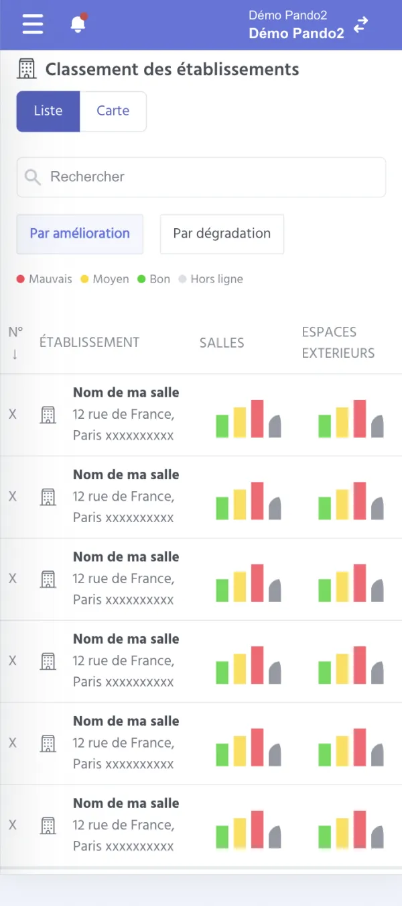

프리랜서 · 건물 관리
Pando2
공기질(특히 CO2 농도)과 에너지 사용량을 모니터링하는 건물 관리 소프트웨어(SaaS)의 인터페이스입니다.


배경
건물의 공기질과 에너지 측정
Pando2는 실내에 설치된 센서를 통해 건물의 공기질(특히 CO2 농도)과 에너지 사용량을 모니터링할 수 있도록 돕는 서비스입니다.
2023년 7월부터 프리랜서로 개발팀에 참여했습니다. 디자이너의 시안을 바탕으로 데스크톱과 모바일용 애플리케이션 화면을 퍼블리싱하고, 공통 컴포넌트를 만들고, 인터랙션에는 Stimulus.js를 일부 사용했습니다.
담당 업무
애플리케이션 인터페이스
- 2023애플리케이션 기본 구조: 사이드 메뉴, 헤더, 탭, 테이블, 폼, 모달 및 사이드 패널 (데스크톱·모바일)
- 2023대시보드: 차트, 시설 지도, 날씨 및 공공 데이터, 측정값 비교
- 2023디스플레이 단말: 실내 공기질을 보여 주는 화면, SVG 애니메이션 배경
- 2024평가 폼: 다단계 입력 흐름, 안내 모달, 요약 화면
- 2024실행 계획: 조치 항목을 생성하고 추적하는 테이블과 패널
- 2024PDF 보고서: 보고서 페이지 레이아웃
Stimulus.js
간단한 인터랙션
제가 작성한 작은 Stimulus.js 컨트롤러의 예로는 탭, 비교 메뉴, 폼 안내 모달, 다단계 폼, 파일 업로드 중 진행률 표시줄 등이 있습니다.
주요 화면
제가 퍼블리싱한 페이지를 로컬 환경에서 예시 데이터로 실행해 캡처한 화면입니다. 이미지를 클릭하면 크게 볼 수 있습니다.



모바일 화면: 디스플레이 단말, 대시보드, 순위, 테이블
배운 점
팀 안에서 장기간 퍼블리싱하기
Pando2에서 대규모 Ruby on Rails 애플리케이션을 팀으로 함께 작업하는 방법을 배웠습니다. 처음에는 디자이너의 시안을 바탕으로 Slim(HTML을 생성하는 템플릿 언어)과 Sass로 재사용 가능한 컴포넌트를 활용해 페이지를 퍼블리싱했고, 이후 팀에서 이를 데이터와 연결했습니다.
또한 Stimulus.js로 인터랙션을 추가했고, 디스플레이 단말 작업을 통해 SVG 애니메이션을 처음 접했습니다.